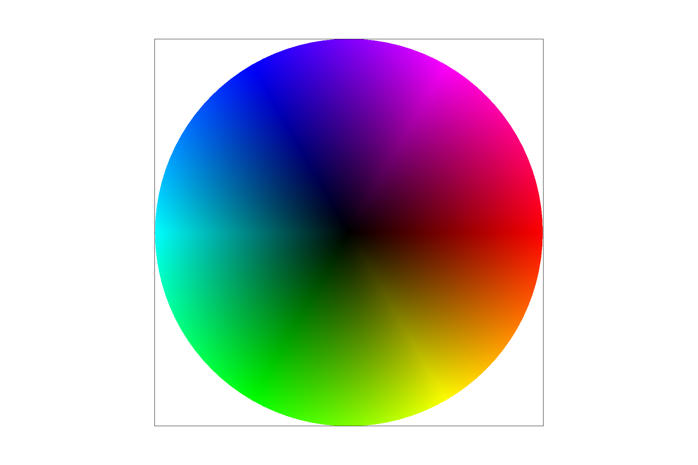

Overview
In this homework, we implement a rasterizer that supports rasterization of images, image transform using matrices and texture sampling using different techniques. I found it interesting on how you debug the graphics by simply looking at the image you generated and see what's going wrong.
Section I: Rasterization
Part 1: Rasterizing single-color triangles
1. First, I bound box the triangle so that I only need to sample through all the points inside the bound box to make fewer sampling works.Then I wrote a function called line\((x_0, y_0, x_1, y_1, sx, sy)\) and implementing the line test algorithm mentioned in class to check whether the sample points \((sx, sy)\) is inside the line. I do this for the three edges of the triangle to determine whether sx, sy is inside the triangle, both in clockwise and counterclockwise direction.
The line test algorithm is this: \(dX = x_1- x_0\), \(dY = y_1 - y_0\), line\((x_0, y_0, x_1, y_1, sx, sy)\) = \(-(sx - x_0)dY + (sy - y_0)dX\). At first I forgot to implement the line test for triangle in clockwise direction, so some of the sample points which are in the triangle are not sampled.
2. The algorithm is the same of checking each sample within the bounding box of the triangle, so the runtime is the same.
3. Here is the picture of basic/test4.svg. Notice that there is a discontinuity on the edge of the triangle. That is the aliasing because of the low sampling rate.
Part 2: Antialiasing triangles
1. I divided each pixel into serval subpixels and do sampling on each subpixel. Then I average the color of each subpixels to get the color of that big pixel, and fill in the color for each subpixel. I modified the rasterize_triangle function to sample each subpixel individually, as well as the get_pixel_color to average the color of each subpixels to get the color of the pixel. It is helpful because it allows you do more samples on each pixel, resulting in the transition of color to make the image smoother. (for example, if you do level 4 super sampling of a pixel, and 3 of its subpixels are inside the triangle, then the color of that pixel will be 75% of pure red, suppose the filling color is red.)
2.
|
|
|
|
|
The triangle becomes smoother as I increase the sampling rates. That’s because, for example, the discontinuity in rate 1, is caused by the pixels on the edge are not sampled because the edges are too thin. This is solved by super-sampling in a way that those pixels’ some subpixels are sampled to be in the triangle, and then the discontinuity can be filled with color in higher sampling rates with a transition in color.
Part 3: Transforms
My robot is doing a dab. I changed the color of the torso to blue and upper triangle of the head to green. Then I did some rotation of my head and torso. I also did some rotation and translation to move my arms, legs, and head. Notice that the rotation is different for clockwise and counterclockwise rotation, and since we're required to do a counterclockwise rotation, it is important to address this point.

Section II: Sampling
Part 4: Barycentric coordinates
1. Barycentric coordinate is a point's position inside a triangle relative to three vertices. For example, the barycentric coordinate of point in the triangle is \(\beta /BD'\), which is the distance from that point to edge \(AC\) divided by the distance from \(B\) to \(AC\). It is obvious to see that if a point is outside of a triangle, then at least one of its barycentric coordinate must be negative. I use the line equation to implement this, which in this picture's case, it's \(L_{AC}(sx, sy) / L_{AC}(x1, y1)\), where \(sx, sy\) are the Cartesian coordinates of the sample point.
2.
Part 5: "Pixel sampling" for texture mapping
Pixel sampling in texture is basically given a barycentric coordinate of a sample point \(p\) \((x, y)\) in the surface coordinate, convert \((x, y)\) into the texture coordinate, \((u, v)\), get the corresponding color in \((u, v)\) and map back to the surface.
Implementation: 1. First, calculate the Barycentric coordinate of the sample point, given the texture triangle. \((\alpha, \beta,\gamma)\). 2. Then, get the \((u, v)\) coordinate of tha sample point in the texture coordinate, using the formula \(\alpha * p0_{uv} + \beta * p1_{uv} + \gamma * p2_{uv}\). 3.Then get the corresponding color using \((u, v)\) in the texture, and fill that color in the \((x, y)\) of the triangle.
Oftentimes, \((u, v)\) can't fall exactly on an integer coordinate. So nearest method is finding the nearest integer coordinate of \((u, v)\) and get the color there. As for bilinear method, this is a method that solve for texture magnification. Bilinear method is first get the nearest four different coordinates near \((u, v)\), then using the linear interpolation to average the color to get the averaged color in \((u, v)\).

|
|

|
|
Basically, bilinear method has a smoother image than nearest neighbor, and the higher the sampling rate, the smoother the image. When the image is magnified, bilinear generates a smoother image than nearest neighbor, because bilinear tends to average the color of each neighbor, thus lower the frequency of the image.
Part 6: "Level sampling" with mipmaps for texture mapping
Level sampling is a method that deal with minified image using mipmap. Basically, mipmaps of different levels are exponentially decreasing resolution image of the original image while level is increasing. The idea is that for a sample point \((x, y)\), you get its neighbor points \((x + 1, y)\) and \((x, y + 1)\), and convert them into texture coordinate. \((u, v)\), \((u + 1, v)\) and \((u, v + 1)\). Then see how far away is the sample point from its neighbors in the texture space. The further it from its neighbors, the higher level the mipmaps it need to use.
Implementation: 1. calculate the barycentric coordinate of sample point \((x, y)\), and its neighbor points \((x + 1, y)\) and \((x, y + 1)\). 2.Using their barycentric coordinates and texture coordinate of each vertices in the triangle, calculate their corresponding texture coordinates \((u, v)\), \((u + 1, v)\) and \((u, v + 1)\). 3. get the correct level of mipmap that we want to sample on, using \((u, v)\), \((u + 1, v)\) and \((u, v + 1)\) and the formula \(L = max(\sqrt{{du \over dx}^2 + {dv \over dx}^2}, \sqrt{{du \over dy}^2 + {dv \over dy}^2})\), \(D = log_2{L}\), where D is the correct mipmap level. 4. Get the texture pixel of the corresponding \((u, v)\) using one of the sampling methods mentioned before in the correct level mipmap.
| Speed | Memory | Antialiasing Power | |
|---|---|---|---|
| Nearest level Nearest sampling |
Medium | High | High |
| bilinear level Nearest sampling |
Medium | High | High |
| Nearest level bilinear sampling |
Slow | High | High |
| bilinear level bilinear sampling |
Slowest | High | Highest |
| 0 level Nearest sampling |
Fast | Low | Low |
| 0 level bilinear sampling |
Fast | Low | Low |
1.Supersampling with higher rate always generate a smoother when other conditions are fixed. 2. Bilinear sampling is the best when image is zoomed in, as the reason I mentioned above. 3. Level sampling costs more memory because you have to store mipmaps with different levels, but it is more antialiasing than 0 level sampling, which costs less memory. 4.Bilinear level produces less aliasing than nearest level, following the similiar reason as bilinear sampling is better than nearest sampling, because it averaged out the color thus reduces the frequency. 5. Level sampling is the best when the image is zoomed out, as the reason I mentioned above.
|
|
|
|
|
|
1. As the image is zoomed out, the dominating factor will be the leveling method
Section III: Art Competition
If you are not participating in the optional art competition, don't worry about this section!